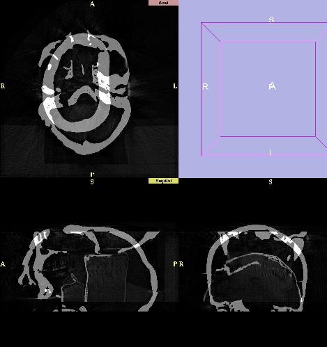
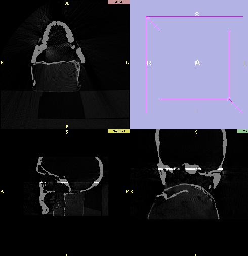

It is sometimes useful to register one dataset to another. This can be done for a number of reasons such as viewing data for one patient from several timepoints or viewing data for one patient using multiple imaging modalities such as CT and MR for the same patient. The registration technique used in the slicer is a rigid registration, which means that one of the datasets is shifted into the imaging plane of the other dataset via 2 simple movements, rotation and translation. No non-rigid processing such as warping is done. This means that the slicer's current registration method is best-suited to registering multiple datasets for the same patient. In order to begin the registration process, you will need to perform the following steps:
We will show a pre-and post registation view below. First we have a view of the scene after performing the steps listed above.

Illustration of Misregistration Problem
(click on image for a larger picture)
Below we can see the scene after manually moving the top of the skull. We move the top of the skull because this is the dataset we selected to apply our transformation matrix to. We can see that the data is now approximately aligned. The white strip is where the two datasets overlap.

data after registration
(click on image for a larger picture)
Matrix name='manual7' matrix='1 0 0 -9 0 1 0 -12 0 0 1 105 0 0 0 1'This Matrix precedes one of the Volumes and describes the rigid transform that moves the top part of the head into alignment with the bottom part. It is important to understand that the slicer does not actually reslice the data, but infact loads in the two misaligned datasets and then applies the transform to create the scene with the data properly aligned.
Sometimes it is useful to refine the manual registration with an automatic registration. The automatic registration uses the matrix above as a starting point for the rigid registration so manual registration must be done first. Auto registration is straight-forward. Select the Matrices tab and the Auto tab. Next select one of the matrices generated in the manual registration phase. Then select the volume to move and the reference volume. Now hit the Run button and the registration will run. It will take a few minutes to run and after some initialization, a series of displays will appear on and dissappear from your monitor, which is part of the registration process. It might be useful for some user to note the change in the matrix:
Matrix name='manual7' matrix='0.999995 0.001058 0.003264 -8.39007 -0.001059 1 0.000422 -11.1639 -0.003263 -0.000425 0.999996 102.155 0 0 0 1'Note that this matrix resulting from the automatic registration uses floating point numbers and is now more precise than the manual registration matrix.